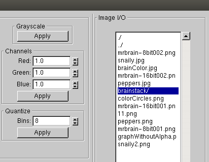
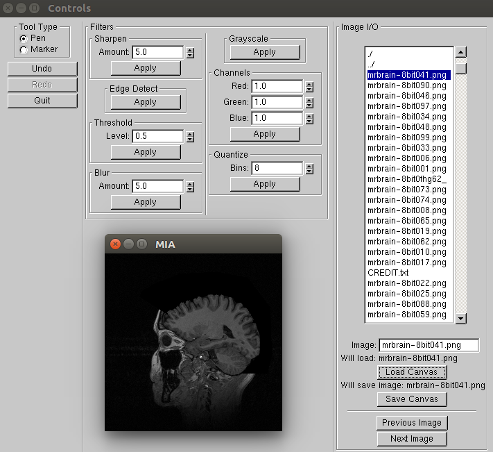
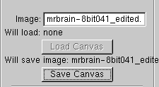
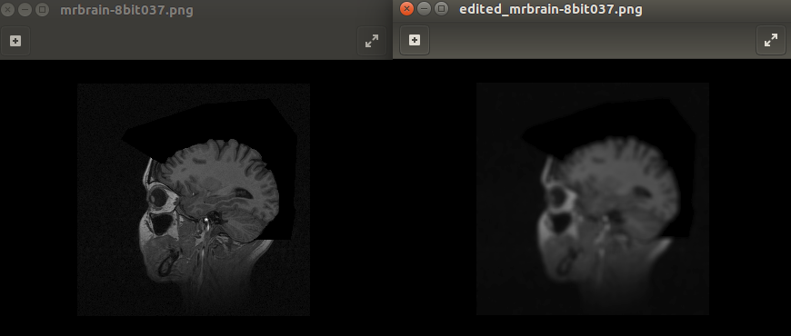

MIA can be used to perform batch operations on an entire directory of images. In this tutorial, you will learn how to convert a sequenced image stack saved as a set of numbered images in a directory to a quantized version that has 4 tissue types. Since MIA can be run in two modes: graphical mode or command line mode, we will provide both approaches on graphical mode and command line mode in this tutorial. Copy-and-paste commands will be provided as well.
Unfortunately, graphic mode doesn't support edit a list of sequenced images at a time. The following tutorial is to show how to edit and save an individual image under the current directory. You will have to redo this for each image you need to edit.
Set up:
cd command to navigate to the directory that contains MIA. Use ls command to ensure that the source directory exists../MIA
Now the MIA window should be opened as below
Convert and Segment image:
resources/test-images/brainstack that contains source images using the right top I/O menu
Load Canvas button to load the specific image to canvas.
Save Canvas button to save the processed image into current directory.
Set up:
cd command to navigate to the directory that contains MIA. Use ls command to ensure that the source directory exists.
cp -r ../../../resources/test-images/brainstack/ .
mkdir command. This is the dicrectory where the converted image will be saved. Following is the command line you will need:mkdir processed_brainstack
Convert and Batch image:
To convert and segment image, you need first slightly blur the image (to reduce noise), quantize the result into 4 segments, and then save the resulting images. To perform this converting and segmenting operation, please enter the following command:
./MIA brainstack/mrbrain-8bit###.png -blur 3.0 -quantize 4 processed_brainstack/edited_mrbrain-8bit###.png
./MIA specifies the MIA application.brainstack/mrbrain-8bit###.png indicates all unmodified sequenced source images under brainstack directory.-blur is the blur filter to be applied to slightly blur the image to reduce noise.3.0 specifies the intensity of the filter.-quantize is the quantize filter to be applied. Quantize filter is used to reduce the number of possible colors by binning each color value into the number of bins specified.4 specifies the intensity of the filter. In this case we need 4 tissue types.processed_brainstack/edited_mrbrain-8bit###.png indicates all edited images and the directory they should be saved in.Optional commands:
Between the input directory and the output directory, you can added any of the following comands to apply to that specific filter or to call helper screen:
-hCheck processed images: In the processed_brainstack directory, you will find a corresponding edited image for each image in brainstack:
